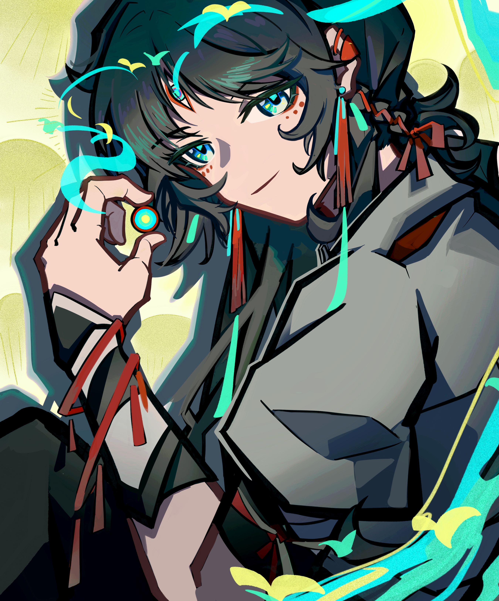
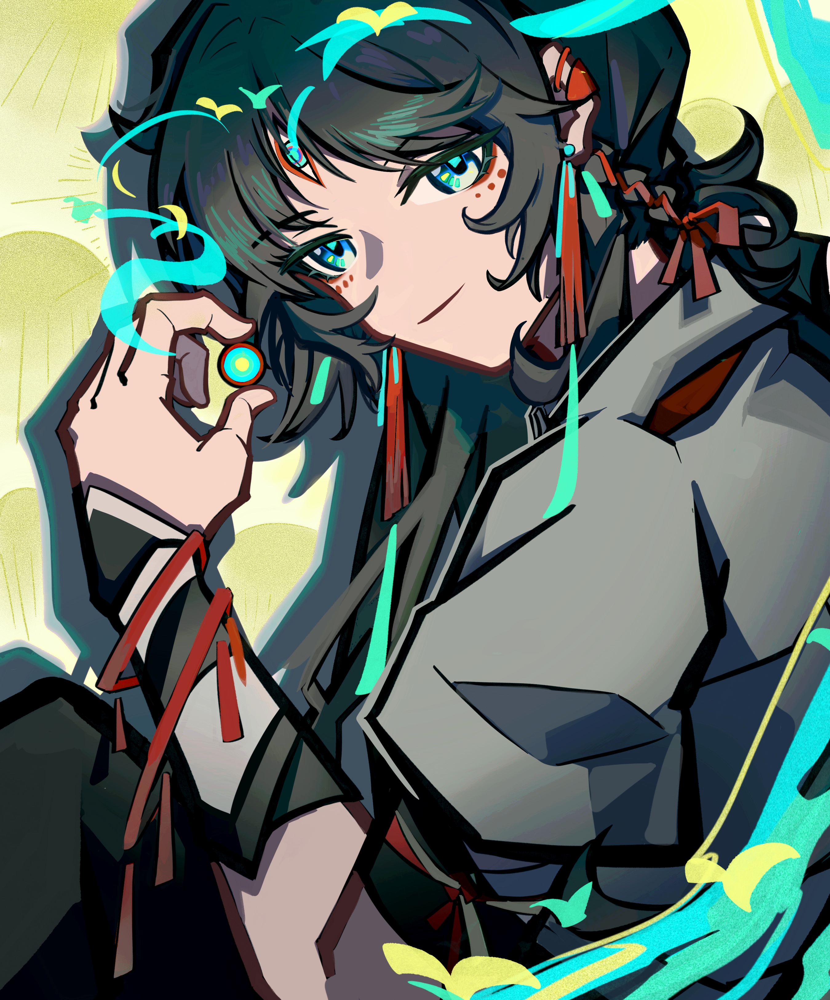

KQLQKQLQF的个人网站
欢迎来到kqlqkqlqF的网站！！
这是kqlqkqlqF网站的首页。请随意探索和享受吧！XD
关于我！（关于我们）
—！！！前排提示，如果你想看些正经的东西，那完全可以跳过这段中二感溢出的“自我介绍”，直接看后面的内容了！相信我，阅读它对你来说除了让你尴尬到脚趾抓地以外没啥好处！—
我是kqlqkqlqF，这个网站展示了我过去完成的项目以及我的兴趣爱好…不！！！我当然不会在我的个人网站上写出这莫无趣的文字！让我们重新开始介绍吧！（难得见你如此…奔放的一面）
:)你好！我是冯一伊，但你可能更熟悉我的网名“kqlq”。你可以把我想象成一个古怪多面的创作爱好者，最擅长的事情就是随时随地开启一场只有我自己的思维盛宴……低情商地说，是胡思乱想 :( （高情商地说，大概是天马行空？）
目前，我正在多伦多大学攻读基因生物学以及统计学士学位。我的课程？哦，如你所料，就是一些统计学啊，细胞与分子生物学之类的课程的混合。没什么大不了的，对吧？
尽管我热爱一切我不了解的事物，但显然我并不是一个典型的科学书呆子。当然，我可以像专业人士一样分析数据或者在实验室提取DNA，但我还曾兼职在一个网吧当餐饮服务员。是的，你没听错——我是调制饮料和编写代码的时间管理大师！（求你了，低调一点…）
当我不在实验室里埋头进行实验或在对着Rstudio编写代码时，你大概率能够看到我如何与自己无处释放的创造力相处。从在Procreate上设计原创角色到在AE里制作二创小动画，我希望能够以最好的方式把我脑海里的构思呈现给大家。！（这倒是说的没错，很有你的风格）
但等一下，这还不是全部！我还是一个自学成才的经济学家！（这确实吹得有点太过了），是一个正在成为大厨的高手！（问问我最近又做了什么大菜），还是一个正在埋头学习日语的初学者！（为什莫日语语法一个字那麽多用法）哦，我我是不是有点过于喜欢吹嘘自己了？！（确实，我都有点看不下去了）是的，起码我觉得我有点了不起。！（如果你没有人格分裂似的和自己吵架的话，确实。）
总而言之，我只是一个普通的大学生，有着对未知的强烈探索欲望，并总能为止积极行动起来。所以，快上车系好安全带，一起踏上这场称为生活的旅程——它一定会是一场精彩的冒险！ （而我，或者说我们…实际上kqlq的设定是类似精分的两个人，一个是对生活包含热情的探险家，另一个是感性内敛的白日梦想家。我们两个人各代表了kqlq的一部分，而就像事物总有两面性…少了任何一个人，我们都不再是kqlq–这是来自kqlq的小小致意。现在，不如就加入她，或者说加我们的旅程吧！毕竟谁都无法留在原地，不如拥抱未来，不是吗。）
我（们）制作的视频
我（们）会定期在BILBILI视频网站发布新的视频。如果没有特殊情况两周会至少更新一个视频，同时与该视频相关的图文资源会被重新排版导出上传到其他平台，比如小红书和Lofter。我（们）制作的视频目前主要是二次元作品的相关二次创作产物，包括小剧场和手书。原创角色和世界观的视频也在制作中，不过鉴于引流能力比起二创作品实在太差，我（们）计划在粉丝量较多再开始增加投放原创角色相关的视频。
我（们）的Github主页

里面保存了一些我（们）以前写过的有关于数据分析的论文，以及支持本个人网站页面的相关代码。对于每个repository里文件的具体用处都在Readme中列出来了，读完就能速通这些乱七八糟的文件夹咯。
我（们）的画


 
 


×
（左右/上下滑动查看更多作品，点击画面可以查看高清大图）
这些画里有些是我（们）的原创角色，有些是二次创作。有些是为了视频画的，有些就是单纯的插画，不过都是最近一年内完成的作品。由于我（们）的绘画水平还有很大的进步空间，目前仍在不断摸索和学习新的绘画风格。
我（们）的社交媒体账户首页
BILIBILI账号：
小红书账号：
Lofter账号： PS. Lofter主页必须登录才能显示，如果不想登录，可以直接搜索lofter账号id“wodhkqlq”。
我（们）的简历
平平无奇，这就是回归生活后真实又正经的我（们）。
如果你想联系我（们）
I看到这里，如果你还没有被我（们）美好的精神状态吓到，欢迎通过以下的联系方式联系我（们）！当然，对于我（们）来说，邮箱是最好的联系方式。
微信账号：kqlqkqlq
电话：（+86）13718814903/（+1）4376843188
邮箱地址：kqlqkqlqkqlqkqlq@gmail.com